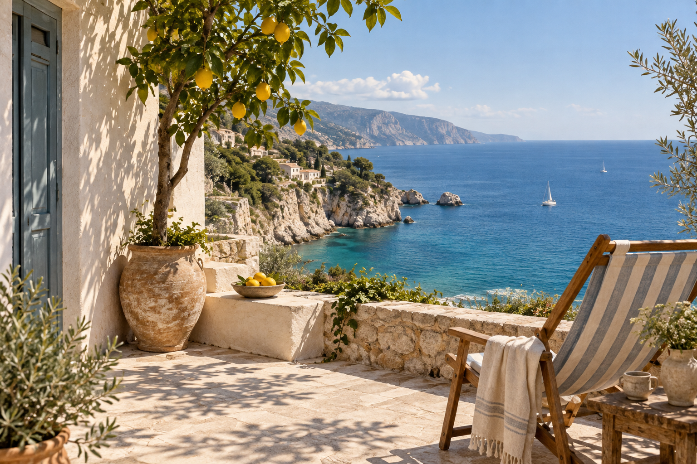

AI生成イメージ / 架空の風景A SMALL TRAVEL JOURNAL
景色だけじゃない。
過ごす時間を選ぶ。
海の近くで本を読む。朝の光で目を覚ます。
誰かのおすすめを追いかける前に、
自分の好きな過ごし方を見つけてみませんか。
旅の読みもの。
すべての記事 ↗FIND YOUR PACE
気分から、旅を探す。
ABOUT THIS JOURNAL
“行ったこと”より、
“感じたこと”を。
AOI DAYSは、旅行メディアのための架空の制作例です。
この記事や写真は実際の滞在記・施設紹介ではありません。